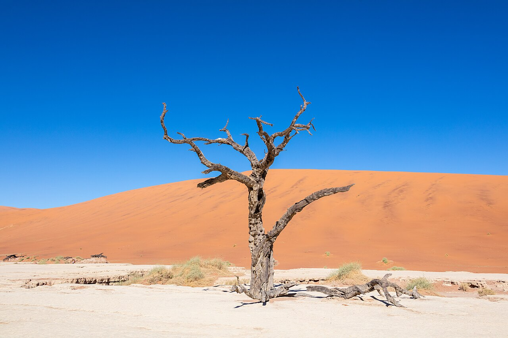
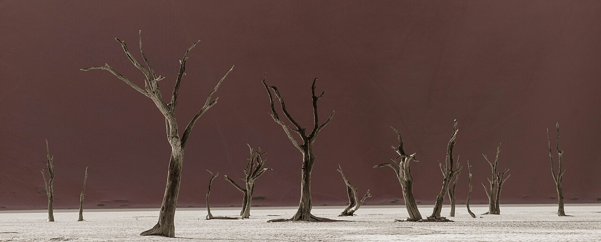

Sossusvlei sits inside the vast Namib-Naukluft landscape in western Namibia. Namibia Wildlife Resorts describes a country of dunes, gravel plains, and rugged mountains, with Sossusvlei and Sesriem among its defining places. Out here, distance and weather become part of the story; a gentler itinerary can leave more space for the view to find you.
A horizon without hurry
Wind gives each dune its own shifting edge. The park operator describes some Sossusvlei dunes as among the world’s highest, with a few rising as much as 325 metres from their base. The number is hard to picture until the ridge is above you and another dune rises beyond it.
Many visitors make their way to Deadvlei, where dark, weathered camel-thorn trees rise from pale clay beneath the orange dunes. The contrast is unforgettable, but so is the stillness around it. The scene has a way of asking you to lower the camera and simply stay a little longer.

Let the morning shape the day
Start with the current visitor information from Namibia Wildlife Resorts’ Namib-Naukluft Park page. Confirm the park’s entry arrangements, fees, road conditions, and any transport or guided-excursion options before you travel. The operator also lists Sesriem Campsite and Sossus Dune Lodge as nearby stay options; availability and details can change.
Early light draws many people out, and the official park operator lists guided sunrise excursions. Your lodge or guide can help explain how the current entry schedule shapes the morning. Leave breathing room between stops—for the soft sand underfoot, a pause in the shade, and the unplanned moments that rarely fit a timetable.
Leave the desert as quiet as you found it
Desert surfaces can look empty while still being fragile. Stay on permitted routes, take rubbish back with you, and follow signs and staff instructions around dunes and pans. If you are travelling with a guide, use their advice on where it is appropriate to walk and how to approach sensitive areas.
A useful packing list is simple: water, sun protection, closed shoes suited to sand, and a charged phone or camera. Check conditions close to your travel date; heat, wind, and access can change what makes sense on the ground.

Official visitor information
- Namibia Wildlife Resorts: Namib-Naukluft Park
- Namibia Wildlife Resorts: Sesriem Campsite
- Namibia Wildlife Resorts: Sossus Dune Lodge
Check current access, rates, and travel notices directly with the operator before setting out.
Recommended apps for the best trip
These independent services are not Met partners. Check local conditions, exact locations, and current availability before booking.
-
Google Maps
Get a first look at long driving distances, then confirm road and park conditions locally.
-
Airbnb
Compare stays and check their exact distance from Sesriem.
-
Booking.com
Compare lodges and review location details and cancellation terms around Sesriem.
-
Hostelworld
Compare hostel options elsewhere on a Namibia route; nearby choices may be limited.
Met
save your name and the memory in the “Sossusvlei” Guest Book with a handwritten-style note or photo, and connect with other great travelers along the path.